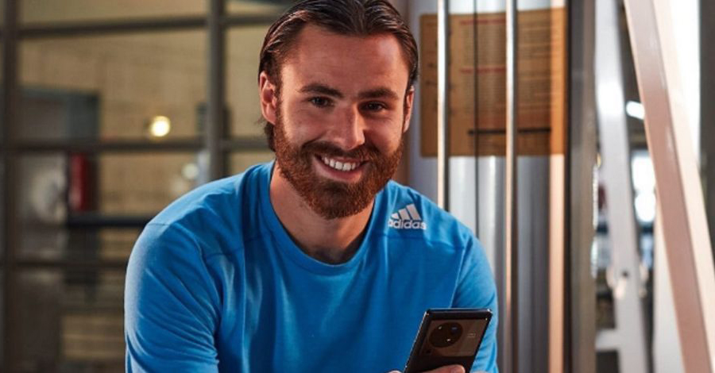
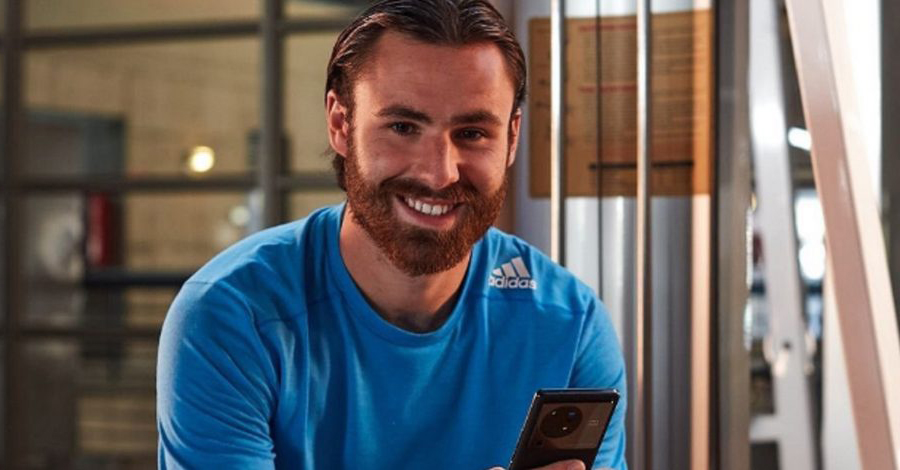

BEN BRERETON DÍAZ
PRIMEROS AÑOS
Benjamin Anthony Brereton Díaz nació en el pueblo de Stoke-on-Trent, Inglaterra, un día 18 de abril de 1999, y es conocido en los medios deportivos como Ben Brereton Díaz. Ben es un futbolista inglés, naturalizado chileno, que juega como delantero en el Blackburn Rovers de la EFL Championship inglesa. Es internacional absoluto con la Selección de Chile.
Nacido en Inglaterra, representó a su país natal en las categorías sub-19 y sub-20 antes de ser seleccionado para representar a Chile en la Copa América 2021 disputada en Brasil, siendo elegible debido a la nacionalidad de su madre, Andrea Díaz. Tras obtener su carta de nacionalización y debutar por la selección chilena, usa en su camiseta el nombre de Brereton Díaz, por la tradición de los nombres en español de llevar los apellidos de ambos padres.
Nació en Stoke-on-Trent, Staffordshire, y asistió a la escuela secundaria de Blythe Brige. Su madre es Andrea Díaz, originaria de Concepción (Chile). Ella es nieta de Juan Díaz, iniciador de la Fábrica Nacional de Loza (luego Lozapenco y actualmente Fanaloza), la empresa de cerámica ubicada en la ciudad de Penco; e hija de Genaro Díaz, quien viajó a Inglaterra para estudiar cerámica en Stoke-on-Trent y regresó a Chile. En 1986, Andrea viajó a Inglaterra y, más tarde, la familia se radicó definitivamente en dicho país. Su padre, Martin Brereton, es un policía inglés que fue futbolista amateur en la Potteries and District Sunday League. Ambos se conocieron en Stoke-on-Trent, se casaron y tuvieron dos hijos, siendo Ben el mayor de ellos.
 

CLUBES
NOTTINGHAM FOREST
Brereton firmó con el Nottingham Forest de la Championship en el verano de 2015 después de salir del Stoke City. Tras su impresionante forma en los equipos de la academia del club, con 15 goles en 20 partidos, Brereton firmó un nuevo contrato con el club el 31 de diciembre de 2016. A pesar del interés de clubes de la Premier League, como el Liverpool y el Manchester United, en enero de 2017, Brereton se quedó en el Forest e hizo su debut profesional el 25 de enero de 2017 como suplente en el minuto 76 durante la derrota por 2-0 ante el Leeds United. Brereton anotó su primer gol como profesional el 4 de febrero, anotando en el tiempo de descuento contra el Aston Villa para darle al Forest la victoria por 2-1.
El 27 de marzo de 2017, después de haber hecho diez apariciones y haber anotado contra Fulham y Brentford, Brereton fue nominado para el premio al Novato del Año. Fue uno de los tres jugadores nominados. Brereton fue anunciado como el ganador en los Premios EFL en el Hotel Hilton, Park Lane, el 9 de abril. Brereton firmó un contrato a largo plazo con el Forest el 22 de junio, manteniéndolo bajo contrato en el club hasta 2021.
En la temporada 2017-18 su rendimiento con el club se mantuvo, llegando a anotarle desde el lanzamiento penal al Arsenal FC en un encuentro válido por la tercera ronda de la FA Cup, el torneo de copa más importante de Inglaterra. El encuentro terminaría con un marcador favorable al Nottingham Forest por 4-2.


CLUBES
BLACKBURN ROVERS
El 28 de agosto de 2018, Brereton firmó un préstamo al Blackburn Rovers, con opción de compra al final de la temporada. El 4 de enero de 2019 fichó permanentemente por el club, la cifra de la transferencia no fue revelada.
Sus primeras temporadas en el club no fueron las más favorables para el jugador, siendo objeto de constantes críticas tanto de la prensa asociada al club como de parte de los mismos aficionados a la institución, quienes llegaban a decir que la inversión realizada por Ben, realmente no valía la pena.
Durante septiembre de 2021, Brereton logró anotar seis goles en cinco partidos, incluyendo su primer hat-trick profesional contra el Cardiff City. Esto subsecuentemente le valió para ser galardonado con el premio al Jugador del Mes de la EFL Championship. Producto de su gran desempeño individual en la temporada 2021-22 junto al Blackburn y a sus apariciones con la selección chilena, Brereton despertó el interés de grandes clubes de Europa, como Manchester United, West Ham United, Sevilla, Fenerbahce, Fiorentina y hasta Real Madrid y Barcelona.


SELECCIÓN NACIONAL
Selecciones Menores
En marzo de 2017, Brereton recibió su primera convocatoria a la selección inglesa tras ser incluido en el equipo sub-19 para los partidos contra España, Noruega y Bielorrusia. El jugador fue titular en la victoria inglesa de 3-0 contra España e ingresó como sustituto en la victoria de 5-1 contra Bielorrusia.
Posteriormente fue convocado para jugar por Inglaterra en el Campeonato Europeo de la UEFA Sub-19 2017. En la fase de grupos, marcó el gol de la victoria contra los Países Bajos y dos contra Alemania. También entró como sustituto en la final contra Portugal, donde Inglaterra ganó 2-1 y consiguió el título de campeón.
Debido a su desempeño, fue uno de los cuatro goleadores del torneo. Volvió a representar a Inglaterra en el Campeonato Europeo de la UEFA Sub-19 2018, donde marcó un gol en la victoria 3-2 contra Turquía.


SELECCIÓN NACIONAL
Selección Adulta
El día 20 de Noviembre de 2020, Álvaro Pérez, jugador de Football Manager, comienza una campaña en Redes Sociales denominada #BreretonALaRoja, para dar a conocer el nombre del jugador a nivel nacional y, de esta manera, conseguir la nominación del futbolista a la Selección Chilena de Fútbol. La campaña en redes sociales se masificó a tal punto, que desató lo que en Inglaterra conocen como la "Breretonmania", logrando de esta forma que el jugador sea finalmente nominado en Mayo de 2021 a La Roja.
Fue incluido en la nómina de la selección chilena para la Copa América 2021 disputada en Brasil. En dicho torneo, tuvo su debut con la selección el 14 de junio, cuando entró como suplente en el minuto 77 del empate 1-1 contra Argentina en el estadio Nilton Santos por la fase de grupos. El 18 de junio, disputó su segundo partido y primero como titular marcando su primer gol por la selección en la victoria 1-0 contra Bolivia. Por la tercera fecha, el combinado nacional se enfrentó a Uruguay en el cual Brereton aportó con una asistencia a Eduardo Vargas en el empate 1 a 1.
Finalmente, Brereton fue titular ante Paraguay en el último partido de la fase de grupos, y contra Brasil por los cuartos de final de la Copa América 2021 en el estadio Olímpico Nilton Santos de Río de Janeiro entró al minuto 46' del segundo tiempo. Dicho partido terminaría a favor del cuadro brasileño por 1 a 0 lo que significo la eliminación del combinado chileno del torneo.


SELECCIÓN NACIONAL
Selección Adulta
Su primera citación a la selección de Chile se produjo en mayo de 2021, bajo la dirección técnica de Martín Lasarte, quien lo nominó para dos fechas de las clasificatorias de Catar 2022, contra las selecciones de Argentina y Bolivia. Hizo su debut por las clasificatorias el 7 de octubre de 2021 en la derrota de Chile 2 a 0 ante Perú en el estadio Nacional del Perú.
El 10 de octubre, en su segundo partido anotó en el minuto 68 su segundo gol oficial con la selección y primero en las clasificatorias, en la victoria 2-0 ante la selección de Paraguay. Cuatro días después en su tercer partido eliminatorio anotó un nuevo gol, esta vez en la victoria 3-0 ante la selección de Venezuela.
Brereton continuó jugando las eliminatorias siendo ya titular con la selección, el 27 de enero de 2022 marcó su cuarto gol con la selección, en la derrota 1 a 2 de la selección frente a Argentina en el estadio Zorros del Desierto, Brereton marcó el 1 a 1 parcial en el minuto 20' del primer tiempo. El 1 de febrero, por la antepenúltima fecha frente al combinado boliviano, jugó como titular sin embargo, debido a la altura del estadio Hernando Siles de La Paz fue sustituido al minuto 74'.